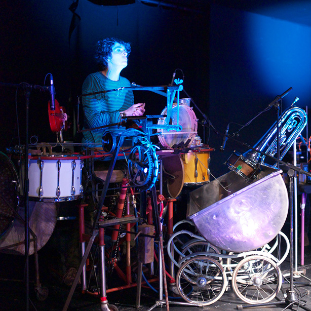
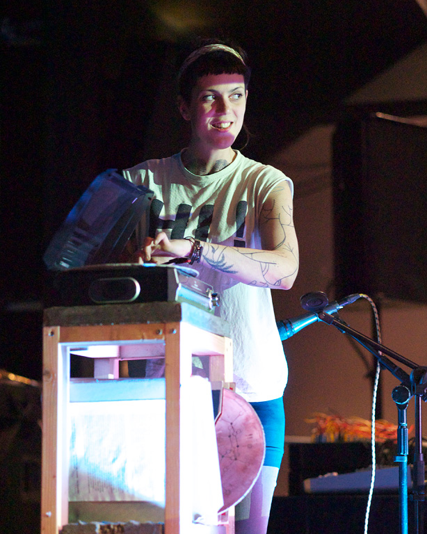
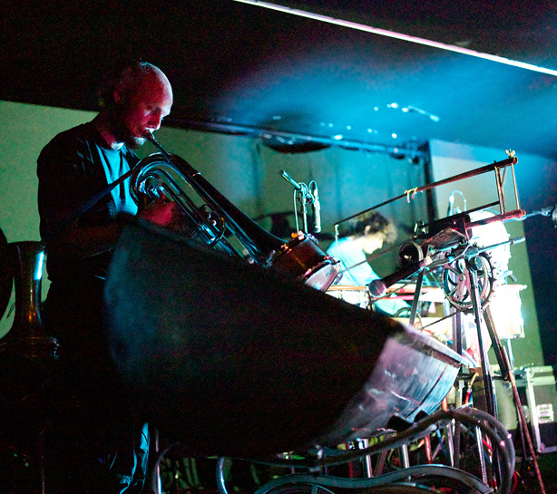

Generally speaking we have resolved not to document remote If Wets. There is a lot involved in putting them on and in our local hall we know better what we face. This means the If Wets at Flatpack Festival and the Southbank Centre are documented only in preview form and in the memories of their attendees.
If Wet at Supersonic is a little different, though, because Sam normally contributes a rambling blog post to the Supersonic Collective Memory, so we felt we ought to provide a few photos (taken by David during the event) at least.
We spoke about our project Descent first. If you are very quick you may still catch it at Millenium Point.
Then we had Sarah Kenchington talk, followed by Ryan Jordan. This led on to an extended Run What Ya Brung section, co-run by Stryx, with presentations by various artists. The day finished with wonderful performances by Sarah Kenchington and Graham Dunning.
Here are some pictures and a few lines about what went on.




We have rooted around for some reviews but most reviewers seem to have stuck to the main stages. Here are a couple of exceptions – 1 / 2.
We enjoyed what the former said of Sarah Kenchington, “It really felt like she summed up everything Supersonic was actually about – pushing the limits of what music is and how we should think about it.”
It was a delight to behold. Thank you to everyone who presented and performed, and to all of you who came to witness it.
Next up, we are off on tour to four village halls across the country. We are delighted with the line-up. Have a look and buy tickets HERE. JOIN US.